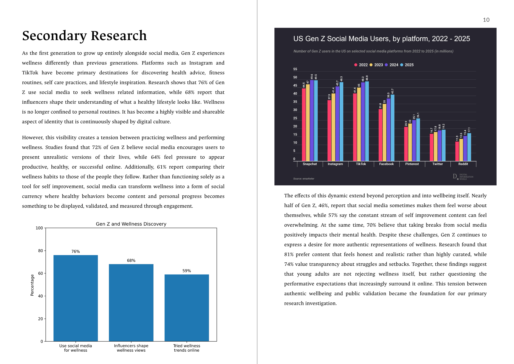
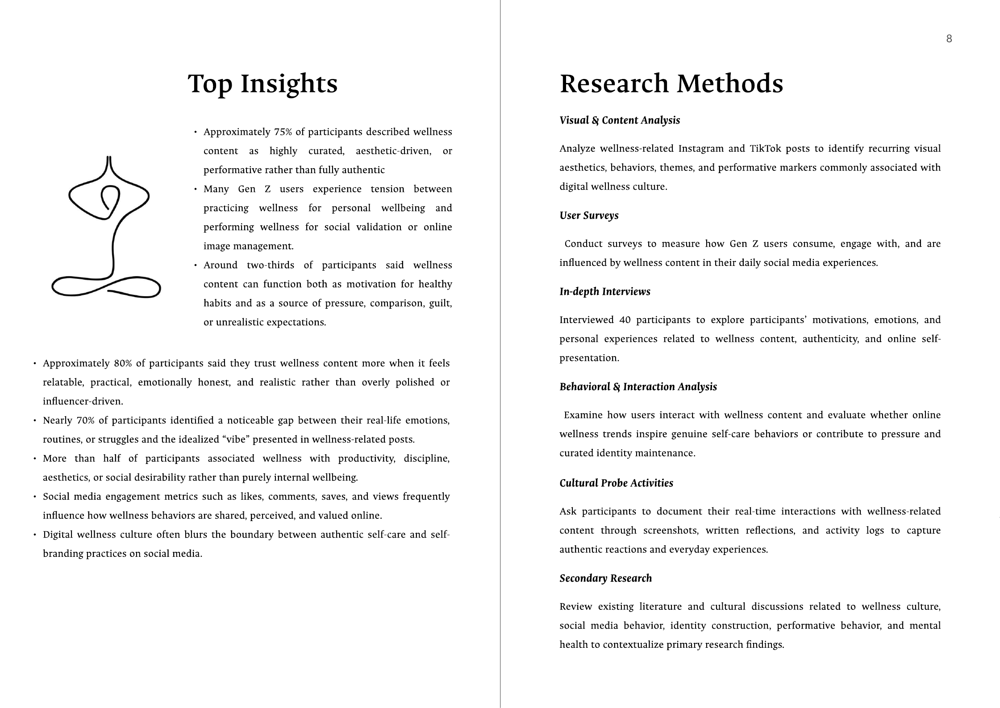
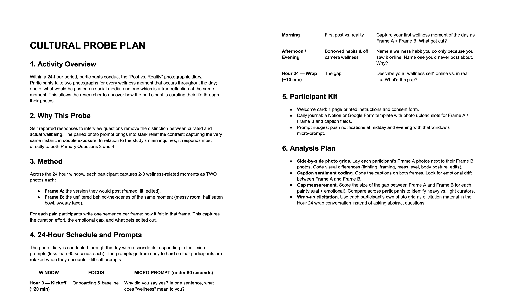
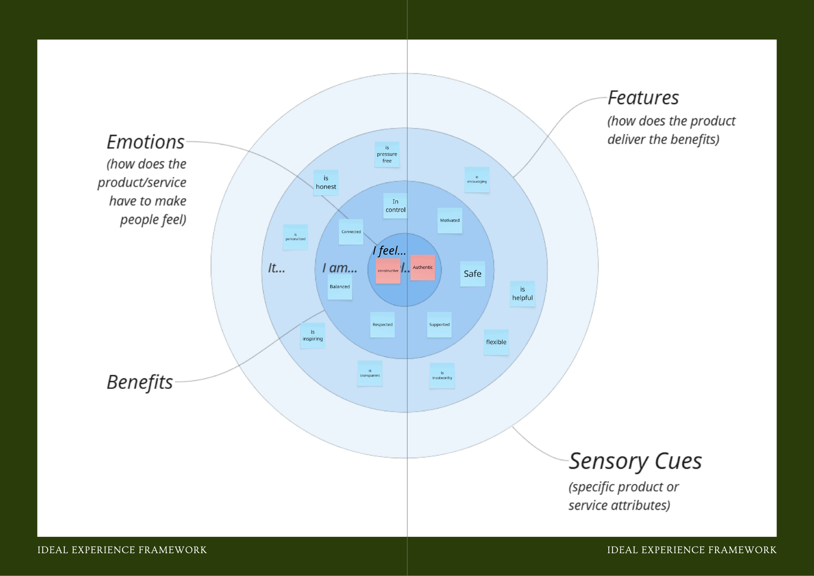
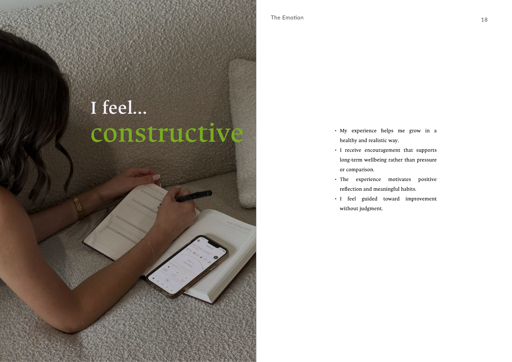
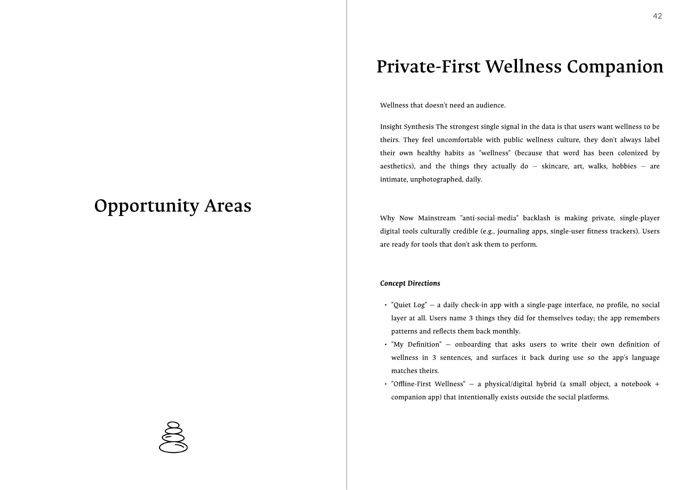
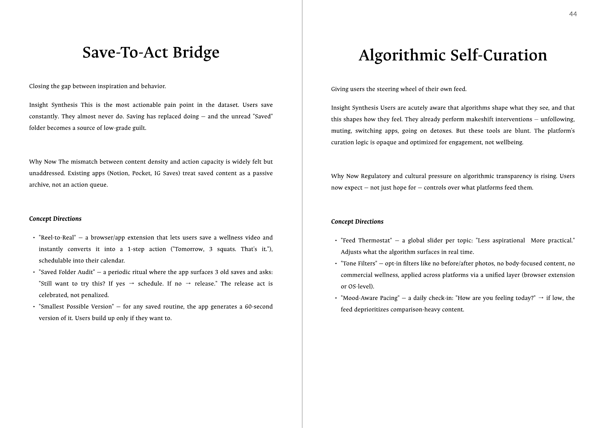
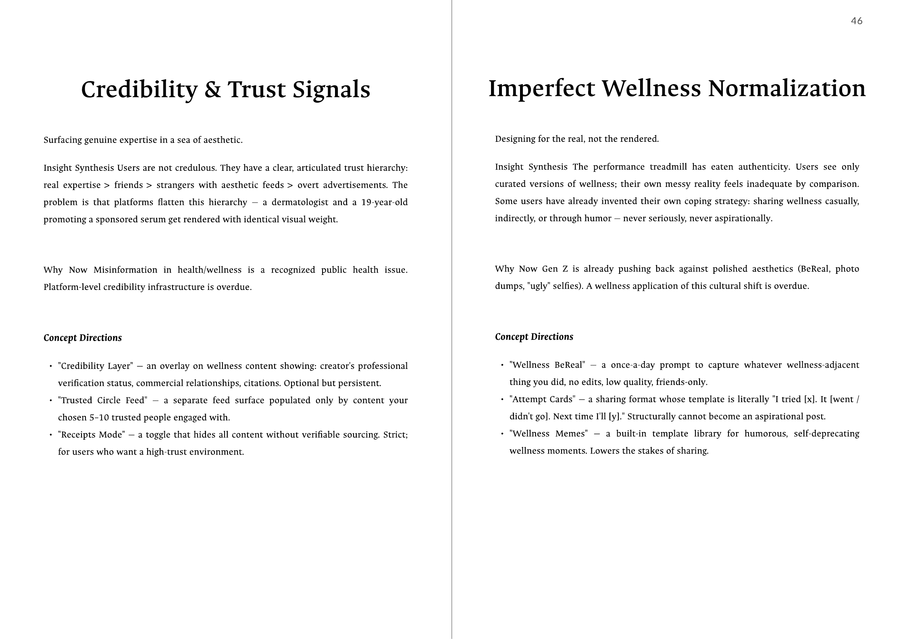
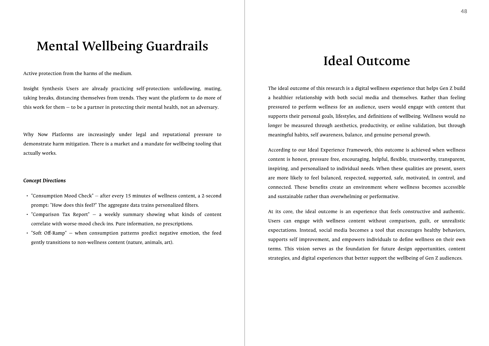

Case 04 / Design research & editorial design
Performing Wellness
Gen Z knows the wellness feed is staged. They post to it anyway. We went to find out why.
— The problem
Wellness is now one of the most visible things Gen Z posts and one of the least understood. Nobody could say whether the routines on the feed were real habits or a performance — and the answer changes what anyone should build for this audience.
— The outcome
A mixed-methods study across 40 interviews, surveys, and content analysis, synthesized into an Ideal Experience Framework and six named opportunity areas. The core finding: users aren't rejecting wellness. They're rejecting the audience.
Context & problem
First, the format. A client book is the deliverable this course is built around: a bound research report written as if handed to a client, so that someone who wasn't in any of the interviews could act on what came out of them — there wasn't an actual company on the other end of this one, but the format holds you to the same standard. It isn't a design. There are no screens in it. Its whole job is to turn a pile of raw research into something a business can make a decision with — which means the writing, the structure, and the framing are the craft.
Before that, a pivot. The team's first direction wasn't wellness — it was Gen Z and sustainability, the gap between attitude and action: 73% of millennials say they'd pay more for sustainable products (Nielsen, 2015), while Gen Z's own social feeds keep fueling a fast-fashion industry worth an estimated $32.5B at Shein alone in 2023, still climbing. We narrowed to wellness because it's the same shape of problem in a different room: a generation that says one thing, is watched doing another, and posts about both. The instinct that got us to wellness — look for where stated values and observed behavior split — is the instinct the whole study runs on.
[Kelly: the willingness-to-pay figure above is a millennial stat, not Gen Z — if the team's actual proposal doc had a Gen-Z-specific number for this, swap it in; otherwise "millennials" reads as accurate framing for the pre-pivot direction.]
[Kelly: send the full-size "Green Generation, Grey Choices" screenshot and I'll uncomment the figure above — save it to assets/images/performing-wellness/pw-early-direction.png.]
Then, the subject. Gen Z is the first generation to have grown up entirely alongside social media, and wellness is one of the dominant things it posts about — fitness, self-care, mental health, productivity, "balanced lifestyles," all rendered through the same visual grammar. The secondary research the team compiled told us the scale of it: 76% of Gen Z use social media to look for wellness information, and 68% say influencers shape what they believe a healthy lifestyle looks like.
But the same body of research pointed at a tension underneath. 72% believe social media encourages people to present unrealistic versions of their lives. 64% feel pressure to appear productive, healthy, or successful online. 61% compare their own wellness habits to the people they follow. And 46% say social media sometimes makes them feel worse about themselves.
Underneath that tension was an appetite for something else: 81% say they prefer content that feels honest and realistic over the highly curated, 74% specifically value transparency about struggles and setbacks, and 70% say taking breaks from social media helps their mental health.
So the gap we went after wasn't does Gen Z care about wellness. It was:
Is wellness something this generation practices — or something it performs?
That distinction matters commercially, not just philosophically. If wellness behavior is intrinsically motivated, you build tools that help people do more of it. If it's driven by visibility and validation, then every "share your streak" feature you ship is making the problem worse while looking like engagement.
Who it's about. Gen Z, ages 18–26, active on Instagram and TikTok, regularly engaging with wellness content — deliberately mixed between people who post wellness content and people who only consume it, and across light, moderate, and heavy usage.
Why the course framed it this way. The study was scoped against UN Sustainable Development Goal 3 — Good Health and Well-Being. SDG 3 assumes digital tools help people get healthier. Our angle was to interrogate that assumption rather than illustrate it: to ask whether social media's wellness culture actually supports wellbeing, or quietly substitutes visibility for it.

[Kelly: checked 2026-08-27 — the client book itself doesn't cite a source for any of the 76/68/72/64/61/46/81/74/70% figures on this spread (it just says "Research shows that…"), so I couldn't verify or attribute them independently; I kept them because they're the numbers in the actual spread shown above, and changing them would put the copy at odds with the image. Section 03 below names McKinsey/Pew/UNICEF/Cybersmile as secondary sources generally — if you or the team have notes on which figure came from which source, send them and I'll add footnotes.]
My role
Team of 4, three jobs that overlapped. The pool was large enough that recruiting, screening, and scheduling for all 40 participants was mine on paper — but 40 interviews split four ways is 10 each, so I also ran roughly a quarter of the sessions myself and wrote my own interview notes, the same as Bailee, Diana, and Chanhwi. And when the research had to become a 27-spread client book, I led that design — the layout, the type, the spine every opportunity-area spread follows.
So the role is really three layers stacked on top of each other. Recruiting decided who the study could learn from at all: the pool had to hold both posters and pure consumers, across light, moderate, and heavy usage, or the practice-vs-performance question collapses before anyone opens their mouth. Interviewing put me on the other side of that same question — ten conversations' worth of watching people describe their own curation in real time. Designing the book is the part that turns 40 interviews' worth of sticky notes into something a reader can actually follow — the cover, the concentric-circle framework diagrams, the fixed spine each opportunity area repeats. If you're looking at any spread in this case study, you're looking at a layout decision I made.
[Kelly: two things would strengthen this section a lot, and only you know them — (1) roughly how many people did you have to reach out to, to land the full pool? A ratio like "reached ~120 to schedule 40" is the kind of concrete number recruiters read as real. (2) Did anything go wrong in recruiting or scheduling — no-shows, a skewed first wave you had to correct for? A recovered mistake is worth more here than a clean number.]
It's a different shape from Asah (backend and knowledge layer) or Scrim (design lead) or Health U (solo). What's consistent across all four: the thing I actually designed — a UI, a backend, or here, a document — is the thing that has to carry the idea to someone who wasn't in the room.
Research
Four methods in the field and a fifth on paper, each doing a job the others couldn't. The reason for the spread is specific to this topic: we were studying performance, and asking people directly whether they perform is the one question you can't trust the answer to. So the design triangulated — what people say, what they post, and what they do in the moment.
Visual & content analysis looked at wellness posts on Instagram and TikTok without involving participants at all, cataloguing the recurring aesthetics and behaviors that get framed as aspirational. This is the layer that establishes what the genre is, independent of anyone's self-report.
Surveys gave us breadth — how much Gen Z consumes, engages with, and acts on wellness content day to day.
In-depth interviews — 40 of them, 60–70 minutes, semi-structured — carried the weight of the study. This is where motivation, emotion, and the gap between the post and the day behind it actually surfaced.
Behavioral & interaction analysis examined what users do with the content once they've seen it: whether a saved routine becomes a routine, or just a save.
A cultural probe — a paired photo diary called Post vs. Reality (see Decision 03) — was designed to catch the gap at the moment it happened, before it got smoothed into a tidy retrospective answer: the same wellness moment captured twice, once as a participant would post it and once as it actually looked. It was written up in full and never fielded. Nothing in the findings below rests on it; it is here because designing it is what forced the rest of the study to stop trusting self-report.
Secondary research — McKinsey, Pew, UNICEF, Cybersmile and others — sat underneath all of it, so our findings could be read against the existing literature rather than in a vacuum.

What came back
The headline numbers, from the combined survey and interview data:
- ~75% described wellness content as highly curated, aesthetic-driven, or performative rather than fully authentic.
- ~70% named a noticeable gap between their real-life emotions, routines, or struggles and the idealized "vibe" of wellness posts.
- ~80% said they trust wellness content more when it feels relatable, practical, emotionally honest, and realistic — and less when it's polished.
- More than half associated wellness with productivity, discipline, aesthetics, or social desirability rather than with internal wellbeing at all.
- Around two-thirds said the same content functions as motivation and as a source of pressure, comparison, or guilt — not one or the other.
The last one is the finding that reframed the project. We went in expecting to sort content into helpful and harmful. What participants described instead was a single stream doing both things to them at once, which means no amount of better content solves it — the mechanism is the audience, not the post.
Goal
A research project doesn't get to define success as a metric moving. Ours had no product to instrument and no client-side numbers to shift, so the bar had to be about the deliverable itself.
The bar we held it to: a client should be able to open the book and know what to build next. Not "Gen Z has a complicated relationship with wellness content" — that's a description, and a client can't do anything with a description. The test was whether the synthesis produced named, distinct opportunity areas with concepts specific enough to argue about. If a reader could disagree with a recommendation on the merits, the research had done its job. If all they could do was nod, it hadn't.
That's also what set the methodological bar upstream. If the deliverable had to survive a client asking "how do you know?", then self-reported opinion alone wasn't going to be enough — which is why the content analysis exists at all, and why the probe got designed even though it never ran.
[Kelly: this is my reconstruction of the implicit bar, built backwards from how the book is actually structured (the fact that it ends in six named opportunity areas rather than a summary). If the course set an explicit rubric or the professor stated a different standard, name that instead — it beats my inference.]
Decisions & tradeoffs
Recruit for the split, not for the number
Forty is a big interview pool for a course project, and the easy version of my job would have been to treat it as a headcount — post the flyer, take whoever replies, stop at 40.
The screening criteria made that impossible on purpose. Participants had to be 18–26, active on Instagram or TikTok, and regular consumers of wellness content — but the pool also had to hold both posters and pure consumers, across light, moderate, and heavy usage.
That split is load-bearing, and it's worth being precise about why. The study's central question is whether wellness is practiced or performed. People who post wellness content are the only ones who can answer the performance half from the inside — they're the ones who know how many takes a "candid" morning routine costs. People who never post are the only ones who can tell you what the same content does to someone on the receiving end of it. Recruit only the first group and you get a study about content creation. Recruit only the second and you get a study about consumption. Neither one answers the question.
The tradeoff: screening this tightly makes recruiting substantially slower, and it means turning away willing volunteers who don't fit the cell you still need. On a two-week fieldwork window that hurts. The reason it was worth it: a finding like "70% see a gap between the post and the reality" is meaningless if the pool skews toward people who don't post — of course they see a gap; they're outside it.
Ask about the process, never the opinion
"Do you think people perform wellness online?" is a question everyone answers correctly and nobody answers honestly. Participants will happily diagnose performance in other people. Almost no one describes it in themselves.
So the discussion guide routed around it. Two questions in particular did most of the work:
"How many shots did you typically take to capture this specific post? What were the criteria for the 'rejected' photos, and why did they not make the final cut?"
This one isn't asking about performance. It's asking about labor — and the number, plus the rejection criteria, is the evidence. Nobody has to admit to anything. They just describe their process, and the process describes them.
"Imagine you had the healthiest, most productive day ever, but your phone was broken and you couldn't post it. Would that day feel any less successful or valuable to you?"
And this one isolates the audience as a variable. It holds the behavior constant and removes only the witness — which is exactly the thing the study is trying to measure and the thing you can't ask about directly.
The tradeoff: hypotheticals and process questions are slower and less quotable than a direct one, and they eat interview time — part of why sessions ran 60–70 minutes. They also demand a facilitator who can follow an answer instead of working down a list.
Don't ask if they curate. Make them photograph it.
Even a well-designed interview is retrospective, and this topic corrupts retrospection specifically. By the time someone recounts how a wellness post made them feel, they've already resolved it into a story where they come off reasonable.
The cultural probe we designed — Post vs. Reality — doesn't ask about curation, it stages it. Over a 24-hour window, a participant would capture 2–3 wellness moments as two photographs each: Frame A, the version they would post — framed, lit, edited — and Frame B, the unfiltered moment underneath it: the messy room, the half-eaten bowl, the sweaty face. One sentence per frame, on how it felt to take it. Four micro-prompts, each under 60 seconds, sequenced easy to hard so a participant is warmed up before the questions that actually cost something to answer.
What that would buy is the unresolved version. The gap between Frame A and Frame B isn't a participant's opinion about performative wellness culture — it's a photograph next to another photograph of the same second. Nobody has to admit to curating. The two frames just sit there, and the sentence under each one describes what that gap felt like from the inside. Designing it is what moved the rest of the study away from what people believe about wellness culture to what they actually do to themselves before they post.
The tradeoff, and what it cost us: a paired-photo probe is the highest-effort thing you can ask of a participant — two shots and two written reflections, per moment, unsupervised, on their own phone. It never went to participants — the plan is where it stopped. I'd still defend it as the right instrument for the question, and the honest version of this section is that designing the right instrument and fielding it are two different accomplishments, and this project only has the first.[Kelly: why didn't the probe get fielded — time, scope, the professor's call, IRB/consent, something else? One clause naming the real reason would make this paragraph much stronger. I deliberately left it out rather than guess.]

[Kelly: I've written this section at the level of "decisions the study made," since the proposal doc assigns the research plan to Bailee and I don't know who specifically wrote the discussion guide or proposed the probe. Decision 01 is unambiguously yours (recruiting was your role), and you ran interviews under 02 and 03's questions same as everyone else. If you personally proposed the probe or wrote either quoted question, tell me and I'll attribute it to you directly — right now this is the defensible shared-team framing.]
The synthesis & the book
6a · From sticky notes to seven themes
Forty interviews' worth of quotes get sorted the same way any affinity map gets sorted, in two passes. First, every notable quote goes up as a raw yellow sticky, tagged with who said it — interviewer and interviewee both, so a claim can always be traced back to a real conversation. Second, clusters of yellow stickies get compressed into a single blue "We…" statement: not what one person said, but what the cluster of them was actually saying underneath the specific words.
That second pass is where seven named themes emerged: Private Wellness, Platform Influence, Platform Purposes, Passive Wellness Consumption, Performative Wellness, Comparison & Pressure, and Authenticity & Trust. The client book doesn't show this step — it jumps straight from methods to the framework — but it's the load-bearing layer between them. Two examples of the compression: a wall of quotes about skincare routines, art, and walks that people didn't call "wellness" and didn't post compressed into "We define wellness as something personal that does not need to be publicly shared online" — the seed of Private Wellness. A separate wall about carefully edited "casual" photos and deleted low-performing posts compressed into "We perform wellness when it becomes part of our image" — Performative Wellness.
The seven themes are what got fed into the Ideal Experience Framework below. Nothing in the framework's three rings — Features, Benefits, the emotional core — appears anywhere except as something that first existed as a raw quote from a named participant.
[Kelly: save the Private Wellness affinity-wall screenshot you sent as assets/images/performing-wellness/pw-affinity-wall.png (exact filename) and I'll uncomment the figure above — it's currently commented out so nothing looks broken.]
6b · The Ideal Experience Framework
Forty interviews produce a great deal of material and no structure. The framework is the structure — it takes one question, "my ideal experience with authentic wellness on social media is…", and organizes every answer into concentric layers, so a reader can see not just what users want but how the surface qualities connect to the feeling underneath.
It reads from the outside in, through the three rings this study defined. The template has a fourth, outermost ring for Sensory Cues — specific product or service attributes — but that layer was out of scope here: this was a research-methods course built around synthesizing interviews into themes, not carrying a concept through to product attributes. It's the empty ring in the spread below.
[Kelly: confirm this framing reads right — that Sensory Cues was never meant to be filled in for this assignment, versus something the team ran out of time for. If it's the latter, say so and I'll adjust the wording.]
Features — how the product delivers. The outermost ring we defined: the qualities users said a wellness space has to have. It is honest, pressure-free, encouraging, helpful, flexible, trustworthy, transparent, inspiring, and personalized. These are the visible, buildable things.
Benefits — what those features produce. When the features land, users are balanced, respected, supported, safe, motivated, in control, and connected. This is the layer clients tend to skip, and it's the one that explains why a feature works.
Emotions — the core. Two words, at the center of everything: constructive and authentic. Not "happy," not "motivated" — constructive ("this helps me grow in a healthy and realistic way, without judgment") and authentic ("I can express my wellness honestly without needing to perform for anyone").
That center is the whole answer to the research question, sitting in two words. Participants weren't asking for better wellness content. They were asking to be allowed to be imperfect in public — or, more often, to not have to be in public at all.


6c · Six opportunity areas
The framework says what a good experience feels like. It doesn't say what to build. So the last third of the book converts it into six named territories — each one with the insight it came from, a why now, and three concrete concept directions a client could take into a design sprint on Monday.
- Private-First Wellness Companion — wellness that doesn't need an audience. The strongest single signal in the data: what users actually do for themselves (skincare, art, walks, hobbies) is intimate, daily, and unphotographed — and they often don't call it "wellness" at all, because that word has been taken over by aesthetics.
- Save-to-Act Bridge — closing the gap between inspiration and behavior. The most actionable pain point we found. Users save constantly and almost never act, and the unread Saved folder becomes a source of low-grade guilt. Saving has replaced doing.
- Algorithmic Self-Curation — giving users the steering wheel of their own feed. Users already intervene by unfollowing, muting, and taking detoxes. Those tools are blunt because the curation logic is opaque and tuned for engagement, not wellbeing.
- Credibility & Trust Signals — surfacing real expertise in a sea of aesthetic. Users have a clear internal trust hierarchy — real expertise > friends > strangers with pretty feeds > ads. Platforms flatten it: a dermatologist and a sponsored serum post get identical visual weight.
- Imperfect Wellness Normalization — designing for the real, not the rendered. Some participants had already invented their own coping strategy: sharing wellness casually, through humor, never seriously. The concepts here make that the default rather than the workaround.
- Mental Wellbeing Guardrails — active protection from the harms of the medium. Users are already doing this work themselves and want the platform to be a partner in it rather than an adversary.
The concepts under each one are deliberately small and specific — a Feed Thermostat slider from "less aspirational" to "more practical"; Attempt Cards, a share format templated as "I tried [x]. It [went / didn't go]. Next time I'll [y]," which structurally cannot become an aspirational post; a Soft Off-Ramp that drifts the feed toward nature and animals when consumption patterns start predicting a bad mood.
Small and specific is the point. A concept a client can picture is a concept a client can reject for a reason — and that's the only kind that moves a conversation forward.




6d · Designing the book itself
All of the above is content. None of it arrives at a reader as content — it arrives as a 27-spread physical object, and I led the design of that object. Three decisions carried the whole thing.
Every opportunity area repeats the exact same spine: a named title, one italic line stating the reframe, an Insight Synthesis paragraph, a Why Now paragraph, three Concept Directions. Six different findings, one template — so a reader learns the shape once and spends every subsequent spread on the content instead of re-orienting. The Ideal Experience Framework gets the same treatment in miniature: each layer (Emotions, Benefits, Features) gets its own spread, always "I feel…" / "I am…" / "It…", so the three rings of the diagram are legible even before a reader reaches the diagram itself.
And the divider pages — the deep green sections that break Introduction from Findings from Opportunity Areas — exist for a reason that has nothing to do with decoration: a 27-page report with no visual punctuation reads as one undifferentiated block, and a tired reader stops trusting that the structure is intentional. The dividers are the book telling the reader where it is.
Outcome
What shipped: a 27-spread client book — background and purpose, methods, secondary research, the Ideal Experience Framework laid out layer by layer, six opportunity areas with eighteen concept directions between them, and a social-impact argument tying it back to SDG 3.
What it concluded: that Gen Z isn't rejecting wellness — it's rejecting the audience. Every one of the six opportunity areas is, underneath, a different way of removing or renegotiating the witness: make it private, make it un-postable, make it filterable, make it verifiable, make it allowed to be ugly, make it protected.
What I can't claim. This was a course deliverable, presented to the class rather than a real company — "client" is the course's name for the format, not a business that hired us. Nothing was designed or built from it, no client adopted a recommendation, and there is no downstream metric to point at. The honest ceiling of this project is the quality of the thinking in the book, and I'd rather say that than dress it up.
[Kelly: how did the final presentation/critique go — professor feedback, class response? I've already used the probe-plan doc you sent (Decision 03); the affinity-wall figure in 6a is still commented out, waiting on a readable screenshot — if you have a shot of the team presenting, that'd be a good addition here too.]
Reflection
What worked well. The method mix. Studying performance means you can't trust self-report, and the study was built knowing that from the start — content analysis to establish what the genre is without asking anyone, interview questions aimed at process rather than opinion, and a probe designed to photograph the curation instead of asking about it. What I can't claim is that the probe carried any of it — it never got fielded, so the 70% "gap between my real life and the vibe I post" finding rests on what people described in interviews, not on paired photographs. That is a weaker footing than the design intended, and it is the honest one.
What was hardest. Recruiting for a pool that had to be split three ways on a tight fieldwork window, while also carrying ten interviews of my own and leading the book's design. Every additional recruiting criterion — posts vs. consumes, light vs. moderate vs. heavy — cuts the number of people any given flyer or DM can convert, and the temptation at every point is to fill the last few slots with whoever's available. Those last slots are exactly the ones that were hard to fill for a reason, which means they're the ones carrying the variance the study actually needs.
What I'd do differently. Own this one directly, because it's mine: I designed the cover, and it opens on a stock photograph of a woman stretching at sunrise — precisely the aesthetic 75% of our own participants called performative. Our research says polished, staged wellness imagery is the thing that erodes trust. Then I put it on the front of the report making that argument. Nobody in the crit named it, and I didn't catch it myself until reading the finished book cover-to-back next to the data. A report that argues for honest, un-curated representation should look like the thing it's arguing for, and mine didn't. That's a rule I've kept on every cover since.
Second, I'd want to close the loop the book leaves open. The six opportunity areas end at concept directions, and concept directions are where research projects usually stop and design projects usually start. Attempt Cards — a share format that structurally can't become an aspirational post — is the one I keep thinking about, and I'd like to actually design it rather than leave it as a bullet in a book I laid out once and moved on from. It's the same question my other work keeps circling: how do you make something honest enough to trust, without making it feel like nothing.